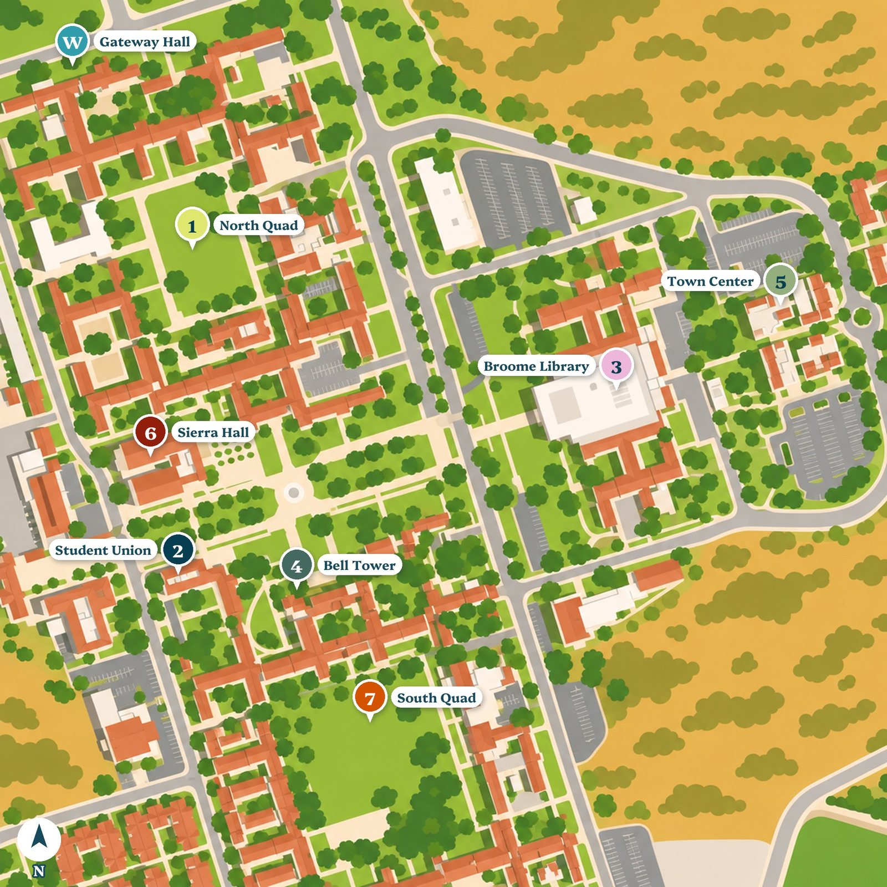

Learning Online 101: Animations and Art
Learning Online 101 gets CSU Channel Islands students ready for online and blended classes. Each module opens with a short moment: a student meeting the challenge the module teaches. These are the pieces made for the 2027 version of the course.
Character moments
Eight short animations, one per module. Each loops and has a Play/Pause button, and it starts paused for anyone who has turned on reduced motion.
Illustrations
One look for all eight scenes: flat shapes, no outlines, the same eyes, each scene in its module's colours.
Illustrated campus map
Drawn from a public-domain USDA NAIP satellite image (2022), so every building sits where it really is. Each module is a stop on a walk across campus: Welcome at Gateway Hall, then the North Quad, the Student Union, the Broome Library, the Bell Tower, the Town Center, Sierra Hall, and the South Quad.
